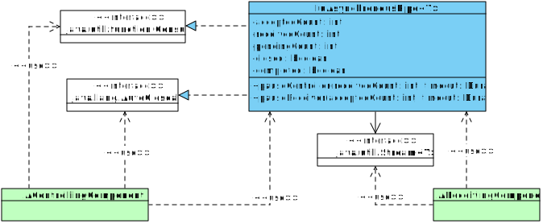

- Type Parameters:
T- value type
- All Implemented Interfaces:
AutoCloseable,Consumer<T>
Accepts values for asynchronous retrieval via
Stream.

A common use case is passing large sets of homogeneous values between heterogeneous components.

Within an asynchronous process: the controlling component
creates a pipe and passes to the receiving component. The
receiving component detaches a Stream
through which values are retrieved. Once connected in this
fashion, the controlling component can asynchronously
supply values to the receiving
component.
Any time after creating the pipe,
- the controlling component may:
- The receiving component may:
splitthe stream.pauseuntil values have beenaccepted.- block until values sufficient to complete a
terminal operationhave beenaccepted.
Although IuAsynchronousPipe may be used as a simple queue on a single
thread, it is intended to be used concurrently on multiple threads in order
to distribute load related to loading and consuming large sets of homogeneous
values.
- See Also:
-
Constructor Summary
Constructors -
Method Summary
Modifier and TypeMethodDescriptionvoidUsed by the controlling component to supply values to the receiving component via theConsumerinterface.voidclose()Used by the controlling component to close the pipe.voidReports an error that occurred on either end of the pipe.longGets a count of all values accepted by the pipe since opening.longGets a count of values accepted by the pipe that have not yet been received.longGets a count of all values received from the pipe since opening.booleanisClosed()Determines if this pipe is closed.booleanDetermines if both this pipe and itsstreamare closed.longpauseController(long receivedCount, Duration timeout) Pauses execution on the current thread until values have been received viastream().longpauseController(Instant expires) Pauses execution until either a timeout interval expires or all values have been received from the pipe.longpauseReceiver(long acceptedCount, Duration timeout) Pauses execution on the current thread until new values areacceptedonto the pipe.longpauseReceiver(Instant expires) Pauses execution until either a timeout interval expires or the pipe has been closed.stream()toString()
-
Constructor Details
-
IuAsynchronousPipe
public IuAsynchronousPipe()Default constructor.
-
-
Method Details
-
stream
Gets a sequentialStreamfor receiving values as they areacceptedby the pipe.For a parallel stream, call
BaseStream.parallel()on the stream returned by this method.The
Streamreturned by this method is not controlled by the pipe and may be retrieved once. The receiving component in control of the stream, and should call this method synchronously during initialization from the thread thatcreates the pipe. All aggregation details are out scope; allStreamoperations are supported natively and without interference by an internally managedSpliterator.- Returns:
Stream- Throws:
IllegalStateException- if this method is invoked more than once
-
getAcceptedCount
public long getAcceptedCount()Gets a count of all values accepted by the pipe since opening.- Returns:
- count of accepted values
-
getReceivedCount
public long getReceivedCount()Gets a count of all values received from the pipe since opening.- Returns:
- count of received values
-
getPendingCount
public long getPendingCount()Gets a count of values accepted by the pipe that have not yet been received.- Returns:
- count of pending values
-
pauseController
public long pauseController(long receivedCount, Duration timeout) throws TimeoutException, InterruptedException Pauses execution on the current thread until values have been received viastream().Typically, the controlling component will invoke this method during a processing loop to manage resource utilization rate relative to the rate values are being retrieved, then invoke
pauseController(Instant)to pause until the receiving component has received all values or invokedBaseStream.close().The basic controller loop example below checks the pending count before iterating, and if there are 100 pending values in the pipe pauses until 10 of those values have been have been received, or up to PT1S, before scanning for and providing more values. Finally, the controller pauses after all values have been provided until either its
workload controllerexpires, or all values have been received. The PT1S pause in this example represents a keep-alive pulse, for example if the loop is a live iterator over a connected resource then one business resource per second is typically a sufficient keep-alive interval.for (final var value : source.getValues()) { pipe.accept(value); if (pipe.getPendingCount() > 100) try { pipe.pauseController(10, Duration.ofSeconds(1L)); } catch (TimeoutException e) { // keep-alive } } pipe.pauseController(workload.getExpires());- Parameters:
receivedCount- count of received values to wait for; returns without delay if <= 0timeout- amount of time to wait; should be positive- Returns:
- the actual number of values received while paused
- Throws:
TimeoutException- if the timeout interval expires beforereceivedCountvalues are receivedInterruptedException- if the current thread is interrupted while waiting for values to be received
-
pauseController
Pauses execution until either a timeout interval expires or all values have been received from the pipe.Typically, the controlling component will invoke
pauseController(int, Duration)during a processing loop to manage resource utilization rate relative to the rate values are being retrieved, then invoke this method to pause until the receiving component has received all values or invokedBaseStream.close().The basic controller loop example below checks the pending count before iterating, and if there are 100 pending values in the pipe pauses until 10 of those values have been have been received, or up to PT1S, before scanning for and providing more values. Finally, the controller pauses after all values have been provided until either its
workload controllerexpires, or all values have been received. The PT1S pause in this example represents a keep-alive pulse, for example if the loop is a live iterator over a connected resource then one business resource per second is typically a sufficient keep-alive interval.for (final var value : source.getValues()) { pipe.accept(value); if (pipe.getPendingCount() > 100) try { pipe.pauseController(10, Duration.ofSeconds(1L)); } catch (TimeoutException e) { // keep-alive } } pipe.pauseController(workload.getExpires());- Parameters:
expires- instant the timeout interval expires- Returns:
- the number of values received while paused
- Throws:
InterruptedException- if the current thread is interrupted while waiting for values to be received
-
pauseReceiver
public long pauseReceiver(long acceptedCount, Duration timeout) throws TimeoutException, InterruptedException Pauses execution on the current thread until new values areacceptedonto the pipe.This method is useful for breaking up output into segments, i.e., via
Spliterator.trySplit(), as in the example below:final var pipeSplitter = pipe.stream().spliterator(); while (!pipe.isClosed()) { pipe.pauseReceiver(targetSplitSize, workload.getRemaining()); Spliterator<String> split = pipeSplitter.trySplit(); if (split != null) final var segmentStream = StreamSupport.stream(split, true); // perform terminal operation on segmentStream } final var tailStream = StreamSupport.stream(pipeSplitter, true); // perform terminal operation on tailStream- Parameters:
acceptedCount- count of newly accepted values to wait for; returns without delay if <= 0timeout- amount of time to wait; should be positive- Returns:
- the actual number of values accepted while paused
- Throws:
TimeoutException- if the timeout interval expires beforereceivedCountvalues are receivedInterruptedException- if the current thread is interrupted while waiting for values to be received
-
pauseReceiver
Pauses execution until either a timeout interval expires or the pipe has been closed.This method is useful for waiting until the controlling component has completed all work before collecting values from the stream, to give the receiving component time-sensitive control over directly blocking via the stream.
For example, to give the controlling component up to 15 seconds lead time, or for all values to be provided, before collecting from the pipe:
pipe.pauseReceiver(Instant.now().plus(Duration.ofSeconds(15L)); final var values = pipe.stream().collect(aCollector);
- Parameters:
expires- instant the timeout interval expires- Returns:
- the number of values accepted onto the pipe while paused
- Throws:
InterruptedException- if the current thread is interrupted while waiting for the pipe to close
-
isClosed
public boolean isClosed()Determines if this pipe is closed.- Returns:
- true if closed; else return false
-
isCompleted
public boolean isCompleted()Determines if both this pipe and itsstreamare closed.- Returns:
- true if closed; else return false
-
accept
Used by the controlling component to supply values to the receiving component via theConsumerinterface. -
error
Reports an error that occurred on either end of the pipe.The error will interrupt all activity and cause the pipe to close.
- Parameters:
e- error
-
close
public void close()Used by the controlling component to close the pipe.The receiving component should use
BaseStream.close()instead of this method to close the pipe.Closing the pipe prevents further values from being
accepted, then unpauses all threads.- Specified by:
closein interfaceAutoCloseable- See Also:
-
toString
-